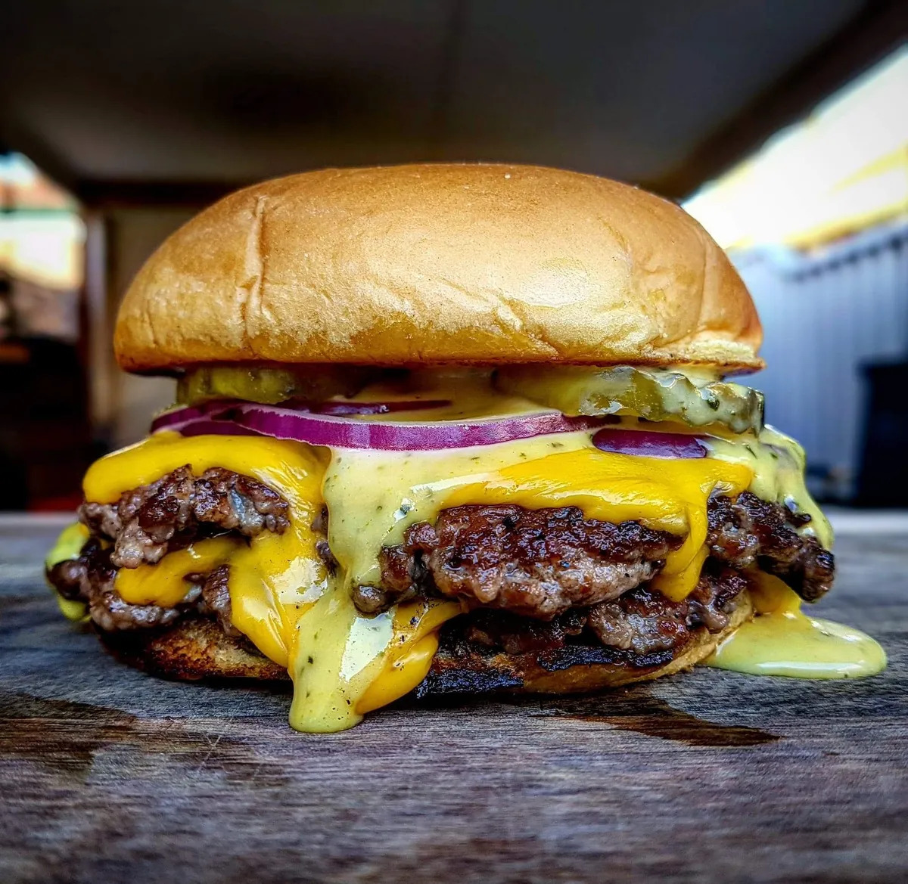

Burger Recipe

The burger is a classic American dish. It's origin is disputed, yet in the modern world it is most popular in the United States. It is traditionally served for informal occasions and family gatherings.
Ingredients:
- 5 fresh jalapeño peppers
- 4 pounds ground beef
- salt and pepper to taste
- 1 egg
- 1/4 cup steak sauce
- 1/4 cup minced white onion
- 1 teaspoon hot pepper sauce
- 1 pinch dried oregano
- 1 tablespoon Worcestershire sauce
- 1 teaspoon garlic salt
- 1/4 cup crushed Fritos corn chips
- 8 large potato hamburger buns
- 8 slices pepperjack cheese
Directions:
- Preheat a grill for high heat. When the grill is hot, roast the jalapeno peppers until blackened on all sides. Place in a plastic bag to sweat and loosen the blackened skin. Rub the skin off, then seed if desired, and chop.
- In a large bowl, use your hands to mix together the chopped jalapenos, ground beef, salt, pepper, egg, steak sauce, onion, hot pepper sauce, oregano, Worcestershire sauce, garlic salt and Fritos. Divide into 8 balls, and flatten into patties.
- Grill patties for 10 to 15 minutes, turning once, or until well done. Then, remove from the grill and place on buns. Top each one with a slice of pepperjack cheese and pig out!